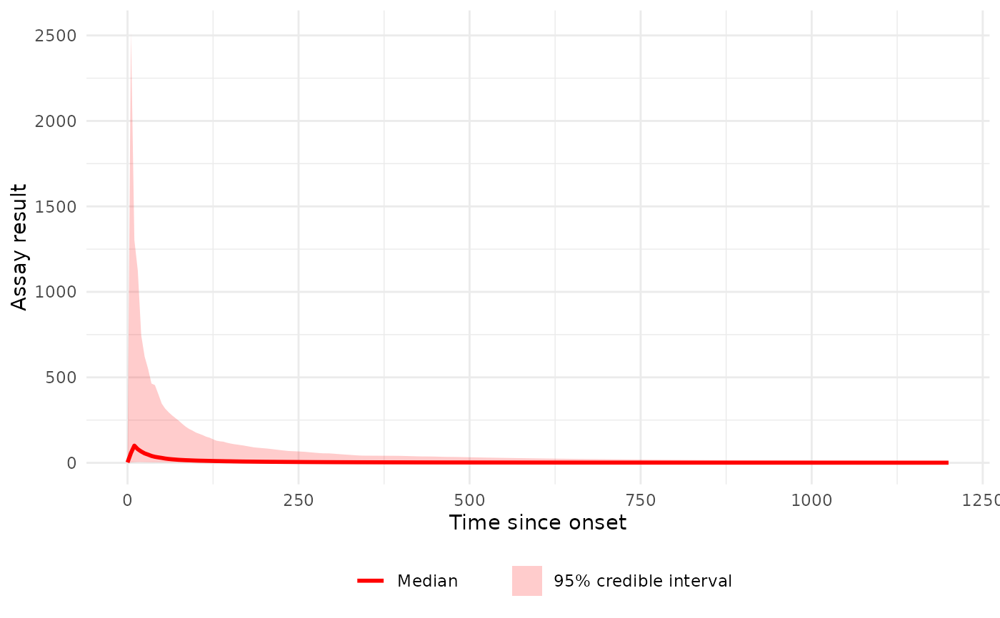
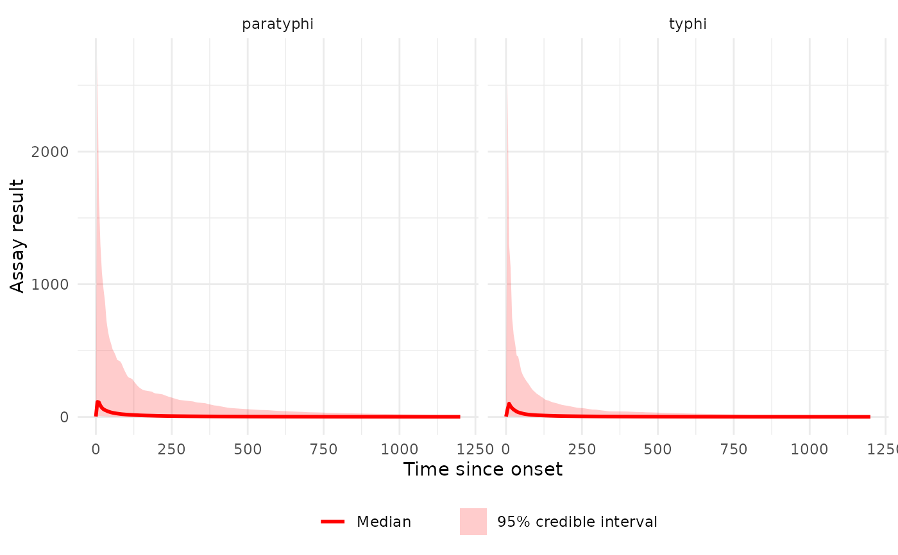
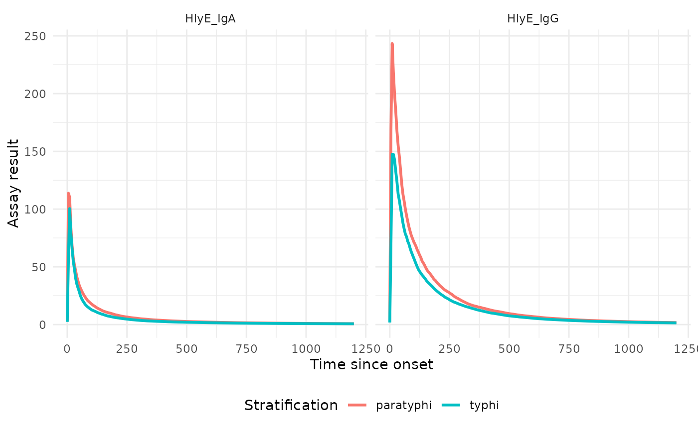
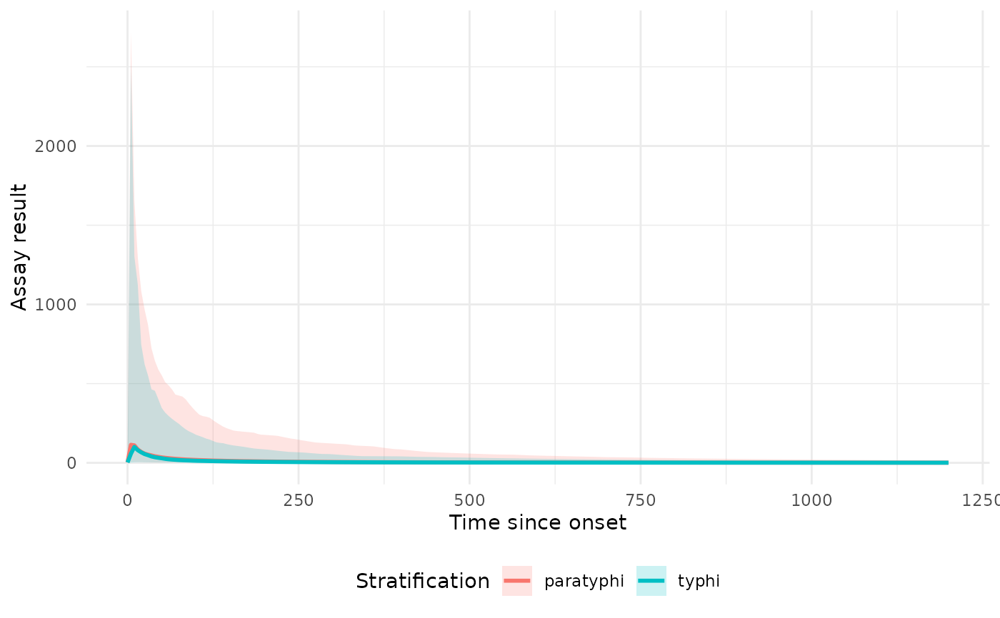

Plot Estimated Serodynamic Curves at the Population Level
Source:R/plot_serocurve.R
plot_serocurve.RdPlots the estimated antibody response curve derived from posterior samples
of population-level (mu.par) or the predictive distribution from a fitted
run_serodynamics() model. A median curve with an optional 95% credible
interval ribbon is produced for each requested antigen-isotype and
stratification combination.
Arguments
- model
An
sr_modelobject returned byrun_serodynamics().- antigen_iso
A character vector of antigen-isotype combinations to plot. Defaults to all antigen-isotypes present in the subject-level draws of
model(model$Iso_type); in normal usage these match the levels available inattr(model, "population_params").- strat
A character vector of stratification levels to include. Defaults to all stratification levels present in the subject-level draws of
model(model$Stratification); in normal usage these match the levels available inattr(model, "population_params").- param_source
character; which posterior samples to use for the curve. Options:
"population"(default): uses population-levelmu.parsamples stored inattr(model, "population_params"). Requires the model to have been fitted withrun_serodynamics(..., with_pop_params = TRUE)."newperson": uses the predictive distribution for a new individual drawn from the population-level prior.
- show_ci
logical; if TRUE (default), draws a 95% credible interval ribbon around the median curve.
- log_y
logical; if TRUE, applies a log10 transformation to the y-axis. Defaults to FALSE.
- log_x
logical; if TRUE, applies a pseudo-log10 transformation to the x-axis. Defaults to FALSE.
- xlim
(Optional) A numeric vector of length 2 giving custom x-axis limits.
- facet_by_antigen_iso
logical; if TRUE, facets the plot by antigen-isotype. Defaults to TRUE when multiple antigen-isotypes are requested.
- facet_by_strat
logical; if TRUE, facets the plot by stratification level. When FALSE (default), different stratification levels are shown as different colours on the same panel.
- ncol
integer; number of columns when faceting. If NULL (default), a sensible value is chosen automatically.
Value
A ggplot2::ggplot object.
Examples
# nepal_sees_jags_output already includes population_params
model <- serodynamics::nepal_sees_jags_output
# Population-level curve for a single antigen-isotype and stratum
p1 <- plot_serocurve(
model = model,
antigen_iso = "HlyE_IgA",
strat = "typhi"
)
print(p1)

# Population-level curves for both stratifications, coloured by stratum
p2 <- plot_serocurve(
model = model,
antigen_iso = "HlyE_IgA"
)
print(p2)
 # Facet by stratification instead of colouring
p3 <- plot_serocurve(
model = model,
antigen_iso = "HlyE_IgA",
facet_by_strat = TRUE
)
print(p3)
# Facet by stratification instead of colouring
p3 <- plot_serocurve(
model = model,
antigen_iso = "HlyE_IgA",
facet_by_strat = TRUE
)
print(p3)

# Multiple antigen-isotypes, faceted, without CI
p4 <- plot_serocurve(
model = model,
antigen_iso = c("HlyE_IgA", "HlyE_IgG"),
facet_by_antigen_iso = TRUE,
show_ci = FALSE
)
print(p4)

# Using the predictive distribution for a new individual (newperson posterior)
p5 <- plot_serocurve(
model = model,
antigen_iso = "HlyE_IgA",
param_source = "newperson"
)
print(p5)
